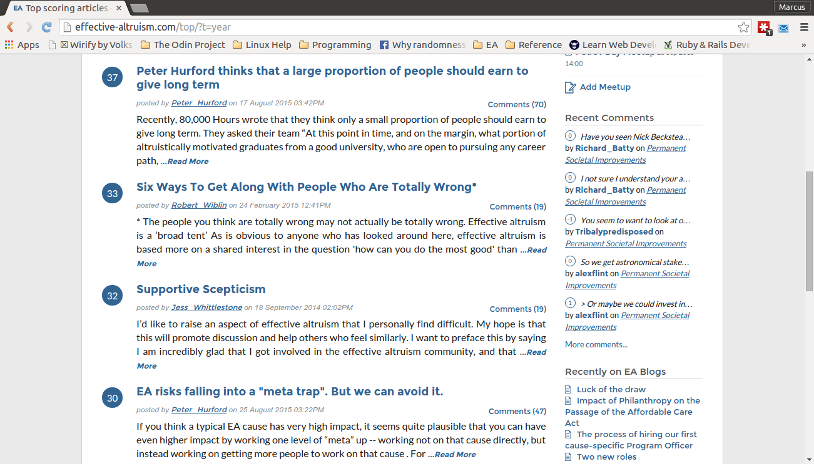

What is Positioning in CSS?
If you're new to working with CSS elements one of the most basic and important things to learn is to get them to show up one the page where you want them to. The most basic way CSS enables you to do this is with the positioning attribute. There are four possible settings of positioning: static, relative, fixed, and absolute.
They are basically what their names suggest. By default, all HTML elements are set to static positioning. This means they are not affected by top, bottom, left or right properties (these properties move elements by reference to the top, bottom, left, and right edges of the page). Relative elements, by contrast, do respond to top, bottom, left and right. They are moved relative to what their position would be if you'd left them with the default of static positioning. Moreover, other elements are not adjusted to fill any gaps created by relative elements. It's like not having your text wrap around a picture in a word processor.
If, for example, you wanted to have the main content of you page spaced in relation to the header at the top of the page, relative positioning would be great.

Next we have the two stationary elements, fixed and absolute. Fixed elements are the simplest to understand as they stay in the same place on the page even if the page is scrolled. Headers and footers on a page that are always displayed and stick in one place as you scroll the page are good examples of fixed elements. You position fixed elements using top, bottom, left, and right and no gaps in the page are left where the element would have been positioned if you'd left it as static.
Finally, absolute elements are placed relative to the nearest positioned ancestor. In English that means, if you have an element that inherits positioning properties from another, like "p" from "body", then an absolute positioning of "p" will place it stationary on the page relative to the position of "body". That means, if there is no ancestor positioning an absolute element will use the document body as an ancestor and thereby respond to scrolling. Absolute elements are great for things you want stationary but to respond to scrolling like sidebars.